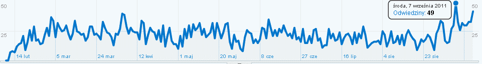
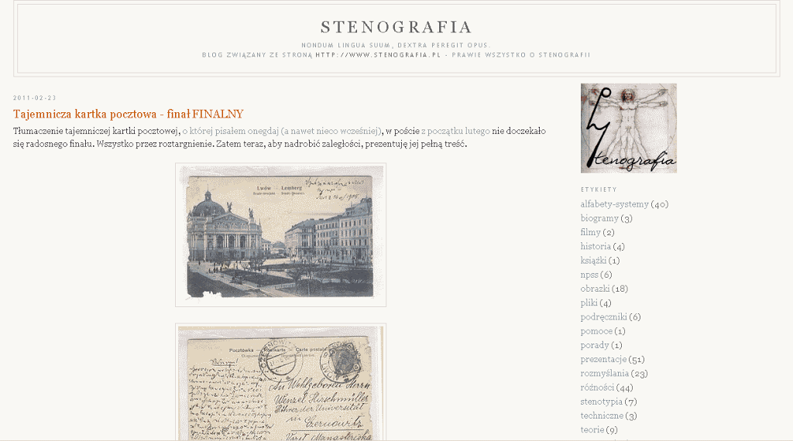
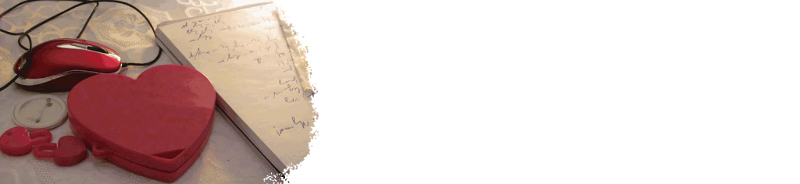

International
InternationalPierwszy julibeusz czyli roczniczka
2011-09-20 | autor: flamenco108Minął dokładnie rok od opublikowania pierwszego wpisu na tym blogu, pora więc na małe podsumowanie.

Stronę główną, od dnia jej przenosin na nową platformę, czyli od16 maja 2011 roku odwiedziło prawie 1500 internautów. W dniach od 10 sierpnia 2010 do 15 maja 2011, czyli starą stronę na platformie Googla odwiedziło ponad 3800 unikalnych odwiedzających, którzy spędzili na moich stronach średnio od 2 do 6 minut, znakiem tego wielu nie tylko tam wpadło, ale i coś przeczytało. W obu wypadkach stosunek nowych i pojedynczych odwiedzin do wielokrotnych wynosi 65 do 35, czyli razem daje to prawie 4000 internautów, którzy przynajmniej raz odwiedzili tę stronę, co daje, o dziwo, całkiem sporo, bo prawie 100 osób dziennie. To obliczenie wydaje się cokolwiek fałszywe, bo z drugiej strony system analiz systematycznie pokazywał, że na te strony wchodzi około 30-40 osób dziennie. Ale może w sumie tyle by się nabiło - blog i strona główna? Zatem podzielmy to na pół. I tak wynik jest całkiem niezły: 2000 (słownie: dwa tysiące). Tyle wskazuje system analiz Google.
Znaczy, o tyle osób wzrosła liczba mających świadomość, że stenografia, że co to jest, z kim i o co. Mogę śmiało założyć, że podwoiłem liczbę świadomych polskiej stenografii. No, śmiało: to jest sukces.

Opublikowałem 134 wpisy blogowe. Łącznie z tym. Od pewnego momentu, konkretnie od opublikowania wspomnień o konkursie na nowy jednolity system stenografii polskiej, starałem się trzymać reżim jednego wpisu na dwa dni. Udało mi się tylko połowicznie.
Zdigitalizowałem przynajmniej 15 polskich książek na temat stenografii. Skromnie licząc - wzrost o 200%. Co to znaczy skromnie? To znaczy, że pierwsza książka to wzrost o 100%. Druga - już o 50%, bo pierwsza plus druga dają nowe 100%. Czyli trzecia to wzrost o 25%, i tak dalej:
| 1 | pierwsza | 100,00% |
|---|---|---|
| 2 | druga | 50,00% |
| 3 | trzecia | 25,00% |
| 4 | czwarta | 12,50% |
| 5 | piąta | 6,25% |
| 6 | szósta | 3,13% |
| 7 | siódma | 1,56% |
| 8 | ósma | 0,78% |
| 9 | dziewiąta | 0,39% |
| 10 | dziesiąta | 0,20% |
| 11 | jedenasta | 0,10% |
| 12 | dwunasta | 0,05% |
| 13 | trzynasta | 0,02% |
| 14 | czternasta | 0,01% |
| 15 | piętnasta | 0,01% |
| SUMA: | 199,99390% |
Czyli “prawie” 200%. Limes tam się znajduje… ;-)
Książki polskie o stenografii opublikowałem na 3 serwisach publicznych, w celu zarchiwizowania ich i dania dostępu każdemu, kto tego zechce. Jeden to mój osobisty, drugi to www.chomikuj.pl, trzeci to www.archive.org.
Tutaj, jak sądzę, wciąż nie powiedziałem ostatniego słowa.
Założyłem, a właściwie zamieniłem je w opis z prawdziwego zdarzenia, hasło “stenografia” w polskiej Wikipedii. To hasło, przynajmniej u mnie, pojawia się jako pierwsze w wyszukiwarce Gugla.
Moja strona główna za to awansowała na miejsce drugie i uważam, że to całkiem dobre miejsce. Ten blog zajął miejsce trzecie. Ciekawe, czy to tylko u mnie jest tak bogato, czy u innych również?

Wraz z No-qankiem opracowaliśmy 2,5 kompletnego systemu stenograficznego. To znaczy, na początku pracowaliśmy razem, a później, jak to w Polsce, nasze drogi się rozeszły (w języku poprawnych politycznie programistów: sforkowały) i każdy zaczął realizować własne idee. No-qanek pracował nad systemem geometrycznym, którego mocno skrócone kompendium opublikował jako NQSS.
Ja zatonąłem w ponownie przez siebie odkrytym świecie stenografii kursywnej. Mój system przyjął ostatecznie nazwę SteMi, choć wcześniej nazywał się np. SuchMir, albowiem powstał na bazie systemu Mirosława Sucheckiego. Z tego Mirosława ostatecznie pozostało tylko tajemnicze “Mi”.
Prace nad systemem SteMi osiągnęły stan taki, że sam już piszę tym systemem. Pracuję nad kompendium, czyli dokumentem systemowym, w którym znajdą się wszystkie jego cechy, od tych koniecznych po oczywiste, wynikające z podstawowych reguł - ale pokazane jako recepty. Pracy dużo, ale też i mnie samemu system dzięki temu w głowie lepiej się układa. Okazuje się, że parę rzeczy zapomniałem, niektóre uznałem za nieważne - dokument systemowy te sprawy prostuje. Mam już 11 stron zapisanych czcionką rozmiaru 10 - a wciąż jestem na początku pracy.**

Wspomniałem wyżej o reżimie 2 dni na 1 wpis. Myślę, że tą oto rocznicową notką pozwolę sobie odejść od tej dyscypliny, której i tak nie udało mi się utrzymać dłużej niż przez połowę zadanego czasu. Pisanie notek blogowych wbrew pozorom jest wyczerpujące - goni mnie czas, a przecież jest tyle ciekawych rzeczy do zrobienia.
Ucierpiała na tym moja praca badawcza, tj. przekopywanie się przez pamiątki po Władysławie Cybulskim.
Ucierpiały na tym moje plany nakręcenia filmów inspiracyjnych wzorem stenografów z innych krajów. Z własnego doświadczenia wiem, że nic tak dobrze nie motywuje do nauki, jak obejrzany na własne oczy przykład. W bardziej odległych planach była także seria filmów instruktażowych nt. stenografii.
Ucierpiała na tym moja praca nad kompendium SteMi.
Ucierpiała na tym nasza wspólna z No-qankiem praca nad stenotypią (oczywiście, znowu się sforkowaliśmy, ale mniejsza o to). Ucierpiał na tym płodozmian. Tak dalej nie może być. To ma mi sprawiać radość. A radość sprawia mi zajmowanie się to tym, to znowuż tamtym, w tempie, które mi odpowiada i w takiejż intensywności.
A zatem postanowiłem, że będę zamieszczał notki blogowe jak najczęściej - ale bez żadnej dyscypliny, żadnego rytmu. Będzie materiał - będą notki. Nie będę się jednak napinał, żeby koniecznie coś wrzucić. To jednak cały czas jest tylko hobby i to bardzo, bardzo niszowe, bo przeciętny Polak więcej wie (a w każdym razie tak mu się wydaje) o tureckim tańcu brzucha, niż o polskiej stenografii.

Zmiany zatem nie będą drastyczne - po prostu autor prosi o litość. I dziękuję z góry. Polecam się łaskawej lekturze w przyszłości.
2011-09-20 autor: flamenco108